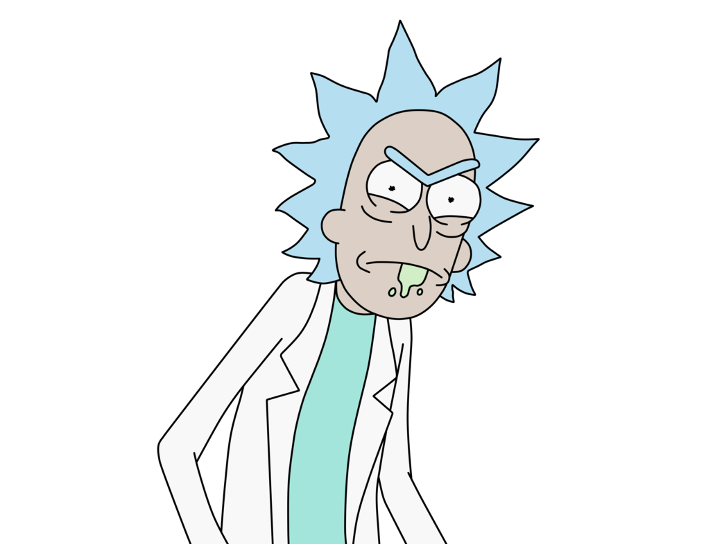

<mat-drawer-container class="h-screen " autosize>
  <mat-drawer #drawer mode="side" [opened]="sidebarService.isSidebarOpen">
    <div class="flex flex-col items-center justify-between h-full p-2 pb-0 bg-slate-800 w-72">
      <div class="flex items-center justify-between w-full">
        <span class="text-lg text-zinc-200">
          Menu
        </span>
        <button class="flex items-center justify-center p-2 rounded-sm bg-slate-900"
          (click)="sidebarService.toggleSidebar()">
          <mat-icon aria-hidden="false" class="text-zinc-200" fontIcon="menu"></mat-icon>
        </button>
      </div>
      <ul class="flex flex-col items-start justify-start w-full h-full gap-4 pt-4">
        <li class="text-base font-medium transition-all duration-300 text-zinc-200 hover:text-zinc-400">
          <a [routerLink]="['/characters']" routerLinkActive="active">Characters</a>
        </li>
        <li class="text-base font-medium transition-all duration-300 text-zinc-200 hover:text-zinc-400">
          <a [routerLink]="['/episodes']" routerLinkActive="active">Episodes</a>
        </li>
        <li class="text-base font-medium transition-all duration-300 text-zinc-200 hover:text-zinc-400">
          <a [routerLink]="['/locations']" routerLinkActive="active">Locations</a>
        </li>
      </ul>
      <div>
        
      </div>
    </div>
  </mat-drawer>
</mat-drawer-container>